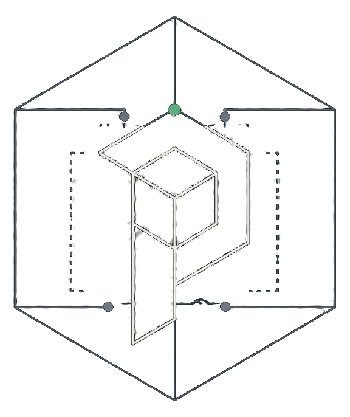

ProvenyxRD designs deterministic, immutable systems — in software and hardware — where AI does the implementation work, and independent verification decides what's true.

Software can report compliance. Hardware can fail silently. Only an independent, immutable record can prove what actually happened. ProvenyxRD systems are built around that principle — deterministic behavior, immutable state, and AI used as an implementation layer, never as the source of truth.
Once state is recorded, it can't be quietly rewritten. Any change is visible, timestamped, and attributable.
The same input produces the same output, every time — no silent randomness standing in for a decision that should be traceable.
Systems that act with real consequences need oversight that sits outside the system itself — not self-reported compliance.
Complex problems get solved as whole systems, with AI as the implementation layer — not as an opaque decision-maker.
Open to conversations with manufacturers, insurers, and partners building toward verifiable systems.
hello@provenyxrd.com